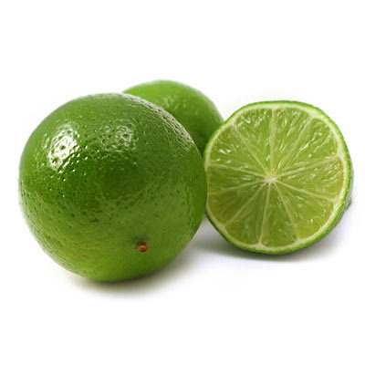

Lime

Limeta (Citrus ×aurantiifolia) este un fruct citric hibrid (C. micrantha x C. medica). Pomul este în general de talie mică - mijlocie și poate ajunge la înălțimea de 4-5 m. Pe ramuri are câțiva spini. Frunzele sunt ovale, cu marginea fin crenată, de culoare verde-deschis.